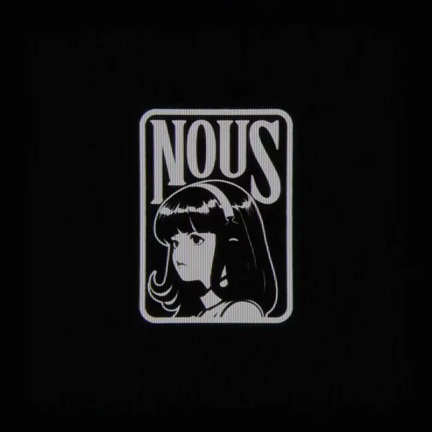
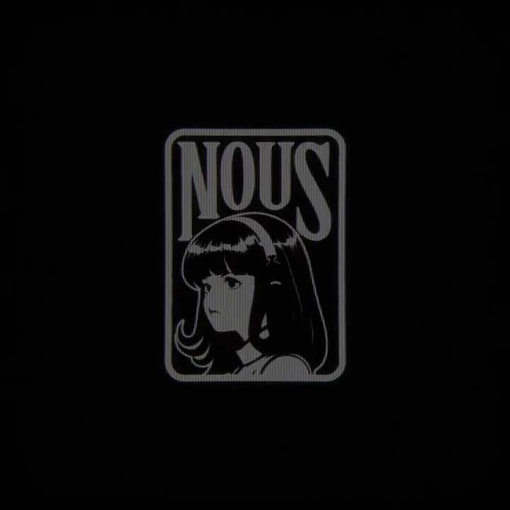

Nous Research / V133
订阅改版
云在上方，设备在下方，发光竖线连接两层。周围终端信息降低对比，主体保持纵向中央构图。
构图与编排 可播放 · 可替换内容
整体编排规则示例
查看 HTML 源码
<!doctype html><html lang="zh-CN"><meta charset="utf-8"><meta name="viewport" content="width=device-width,initial-scale=1"><title>订阅改版 · sequence</title><style>html,body{margin:0;width:100%;height:100%;overflow:hidden;background:#000000}canvas{display:block;width:100%;height:100%;object-fit:contain}</style><body data-mode="sequence"><canvas width="1000" height="600"></canvas><script src="data.js"></script><script src="common.js"></script><script src="scene.js"></script><script src="bridge.js"></script></body></html>画面元素发光云下方设备代码片段中央徽章消散粒子
MOTION LANGUAGE
动作与构图
局部动作 · 构图规则
01
建立上下相连的计算图景
云在上方，设备在下方，发光竖线连接两层。周围终端信息降低对比，主体保持纵向中央构图。
02
用短暂故障切换到品牌
用短暂故障切换到品牌规则示例
查看 HTML 源码
<!doctype html><html lang="zh-CN"><meta charset="utf-8"><meta name="viewport" content="width=device-width,initial-scale=1"><title>订阅改版 · sequence</title><style>html,body{margin:0;width:100%;height:100%;overflow:hidden;background:#000000}canvas{display:block;width:100%;height:100%;object-fit:contain}</style><body data-mode="clip" data-start="6" data-end="9"><canvas width="1000" height="600"></canvas><script src="data.js"></script><script src="common.js"></script><script src="scene.js"></script><script src="bridge.js"></script></body></html>徽章先以条带错位闪入，随后稳定在中心；云和设备变为粒子向外消散，徽章自身保持完整。
03
把尾段留给清晰标识
去掉背景后保留一段黑底徽章，再整体淡出。换主题时更换中央标志和上下对象，但保留复杂环境退场、品牌留下的逻辑。
SEQUENCE
段落与节奏
点击段落，定位到上方编排示意。


画面参考 · 离散静帧
KEEP THE RELATIONSHIPS
制作其他主题
- 替换中心徽章与网络对象，保持从复杂计算场景到纯品牌的减法。
制作约束
发光云 / 下方设备 / 代码片段 / 中央徽章 / 消散粒子
- 云在上方，设备在下方，发光竖线连接两层。周围终端信息降低对比，主体保持纵向中央构图。
- 徽章先以条带错位闪入，随后稳定在中心；云和设备变为粒子向外消散，徽章自身保持完整。
- 去掉背景后保留一段黑底徽章，再整体淡出。换主题时更换中央标志和上下对象，但保留复杂环境退场、品牌留下的逻辑。